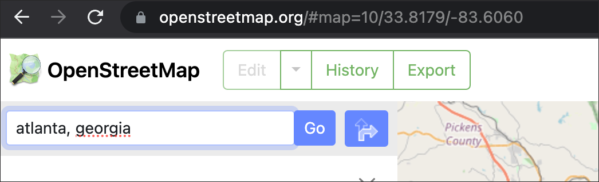

Preamble
In this sixth technical lab, we will complete steps necessary for the sixth assignment. These lab steps should be used extensively to aid with the completion of the sixth assignment due Sunday evening at 11:59pm.
Data
The primary vector feature needed for this assignment will be derived by you from OpenStreetMap via Overpass Turbo. A secondary vector feature representing the UTM zones needed also for this assignment is linked as follows:

Note the .prj file which states the GCS for this feature: GEOGCS["GCS_WGS_1984",DATUM["D_WGS_1984",SPHEROID["WGS_1984",6378137,298.257223563]],PRIMEM["Greenwich",0],UNIT["Degree",0.017453292519943295]]
Assignment Step 1
Download the Class 6 assignment data
Create an assignment
.mxd, placing it within your assignment 6 directory. Establish your vector data connection via ArcCatalog to your assignment.mxd.
Next, navigate via web browser to OpenStreetMap (OSM). In the assignment example below, the city of Atlanta, Georgia will be used. In your own assignment submission choose a global city that features the following characteristics:
- A very large city.
- Multiple land uses in addition to impervious, high urban surfaces.
- Falls within 1 UTM Zone.
Search for your city of choice in the upper-left search box at OSM:

OSM will return all results associated with your named city; make sure you are choosing the actual city:

Note the attribute name; in this case its simply Atlanta. Use the following code construction for the next step using Overpass Turbo:
name = Atlanta
Navigate to Overpass Turbo and insert your city search construction into the Query Wizard

The result should produce a vector polygon feature highlighted for the administrative boundary of your city; see example to follow for Atlanta, GA:
Make sure to position the bounding box over the city as the code is searching within a bbox which translates as the bounding box

At this juncture, Export the selection(s) for your city to the geojson format:
Note the .geojson file defaults to a GCS of WGS84:
“The coordinate reference system for all GeoJSON coordinates is a geographic coordinate reference system, using the World Geodetic System 1984 (WGS84) datum, with longitude and latitude units of decimal degrees.” reference
With the .geojson file downloaded and placed into your assignment folder, navigate to mapshaper. Next, import the .geojson file to Mapshaper:
Following the Mapshaper import, its critical to remove any polyline or points features, and just keep only the polygon feature. Once this is complete, Export the polygon feature to your assignment folder:
Next, unzip and import the administrative polygon to your assignment .mxd. Once complete, also import the UTM Zones shapefile. There should be no errors reported at this juncture for projection issues. All data thus far is explicitly within the WGS84 coordinate system:
Label the UTM_zones shapefile so that its evident where your city of choice falls within the UTM zones. Here its clear that Atlanta, GA falls fully within the UTM Zone 16; since this is north of the equator, we use Zone 16N; if it were south of the equator we would use Zone 16S.
Next, navigate to the Copernicus Global Land Cover dataset and download the tile that corresponds best with your city. Ideally you will only need to download 1 tile. If two are needed, utilize the Mosaic Rasters process from Class 6 Technical Lab.

Choose the Discrete Classification product for the year 2019 and download the .TIF product to the assignment folder:
Assignment Step 3
- Next, Mask the raster with the vector layer so that the full coverage raster tile is ‘clipped’ to the edge of the vector city feature. Going forward, this will be the input raster for initial processing steps below:
Assignment Step 4
- Utilize the UTM Zones feature to determine which zone encapsulates to full extent of your global city. If by chance your city straddles two UTM Zones, you are advised for this assignment to simply choose a different global city that indeed falls fully within one UTM Zone. As noted prior, the relevant UTM zone for Atlanta, Georgia is
UTM Zone 16N. Project this vector feature and output to the assignment folder using the correct UTM Zone for your city:

Note the resulting projected vector polygon feature can reside within the larger project CRS which is WGS84 at this juncture. This is the result of the ‘on-the-fly’ projection capacity of ArcMap.
Assignment Step 5
Next, Polygonize the raster cells within the new clipped raster for your city.
Make sure to Toggle OFF Simplify polygons.
- Dissolve the new polygon feature, utilizing the attribute
gridcodeas the dissolve field:
gridcodeAssignment Step 5
- Once the Dissolve is complete, Reproject the new Dissolve layer to its correct UTM Zone:
Assignment Step 6
Utilize the Field Calculator to create 3 new columns:
AREAas a double columnClassas a text column% Landas a double column
In the AREA column, run the Calculate Geometry tool accessed from the attribute table AREA column. Set the units to Square Miles and use the new UTM zone as the coordinate system:
Calculate Geometry toolCalculate Geometry in AREA column- Next, create summary statistics for
AREA; in the assignment example for Atlanta, Georgia the result is134.707square miles:
AREA columnNext, in the pct_land column, set the numeric rounding to 2 digits, and run the percentage calculation in this column as follows replacing the SUM AREA value with your own city’s total:
- Formula:
([AREA]/134.707583)*100Next, initiate an editing session; and highlight the Class column:
With the Class column highlighted downward across all records, pick one row in which it operate Field Calculator. Use the table below in Assignment Step 7 for the correct gridcode > Land Cover Category combinations. In the example below, gridcode 20 corresponds to shrubland. Remember to enter text into the Field Calculator encapsulated by double quotation marks - for example, "sample word".
With all classes complete with corresponding gridcodes, you will incorporate the output table into the final cartographic layout (use the same process as Assignment 2 and Assignment 5).
Assignment Step 7
- Proceed to the final map layout. Here you will also create a legend with the following nominal categories
Land Coverwhich will be used in lieu of thegridcodecolumn:
| gridcode | Land Cover Category |
|---|---|
| 0 | unknown |
| 111 | Evergreen needleleaf closed forest |
| 112 | Evergreen broadleaf closed forest |
| 113 | Deciduous needleleaf closed forest |
| 114 | Deciduous broadleaf closed forest |
| 115 | mixed closed forest |
| 116 | unknown closed forest |
| 121 | Evergreen needleleaf open forest |
| 122 | Evergreen broadleaf open forest |
| 123 | Deciduous needleleaf open forest |
| 124 | Deciduous broadleaf open forest |
| 125 | mixed open forest |
| 126 | unknown open forest |
| 20 | shrubland |
| 30 | herbaceous vegetation |
| 40 | cropland |
| 50 | built-up |
| 60 | bare sparse vegetation |
| 70 | snow ice |
| 80 | permanent inland water |
| 90 | herbaceous wetland |
| 100 | moss lichen |
| 200 | sea |
Copernicus Global Land Service: Land Cover 100m: version 3 Globe 2015-2019: Product User Manual

Only use the land cover categories that are included in your final chosen city extent. Those that are not within your city extent, simply don’t include those in the final legend.
- Refer to Map Layout & Deliverable below for other cartographic details.
Map layout & Deliverable:
To development the final map design, utilize the map example PDF below to help guide your process.
Final map layout will include the following elements on either a 11x17” or 8.5x11” Portrait/Landscape 300 DPI:
- Main map frame featuring your cartographic output
- Insert summary table
- A map title
- Legend representing each nominal land cover category within your chosen city.
- Simple scale bar tailored to a meaningful distance(s) across chosen city.
- North Arrow
- Data source & Author tag

Example Layout - Assignment 6 Utilize the following map example to guide your design process:
Concluding Remarks:
Further Reference:
Guide for working with Map Projections in QGIS REFERENCE GUIDE
The IOGP’s EPSG Geodetic Parameter Dataset is a collection of definitions of coordinate reference systems and coordinate transformations which may be global, regional, national or local in application.
Interesting Article on the Dymaxion Map Projection: Reinterpreting Bucky Fuller’s Dymaxion Map